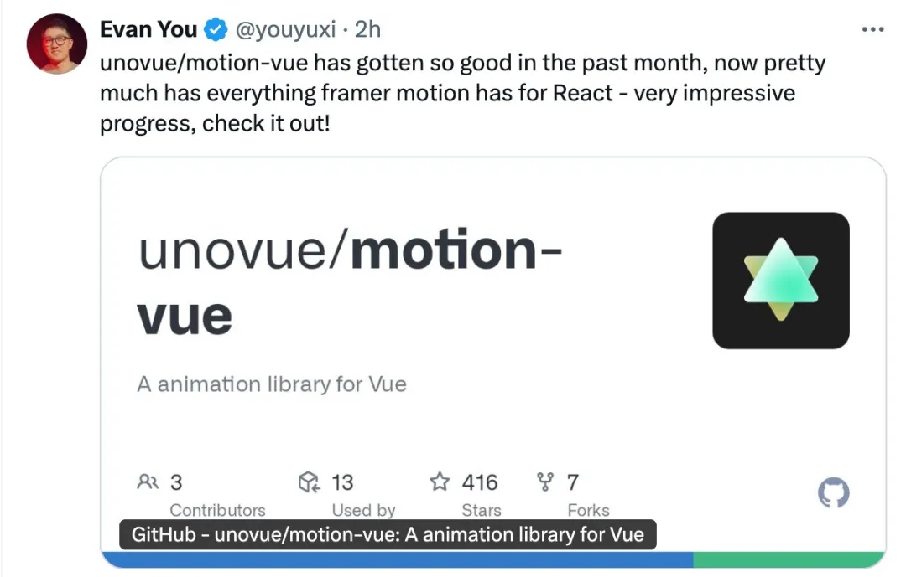
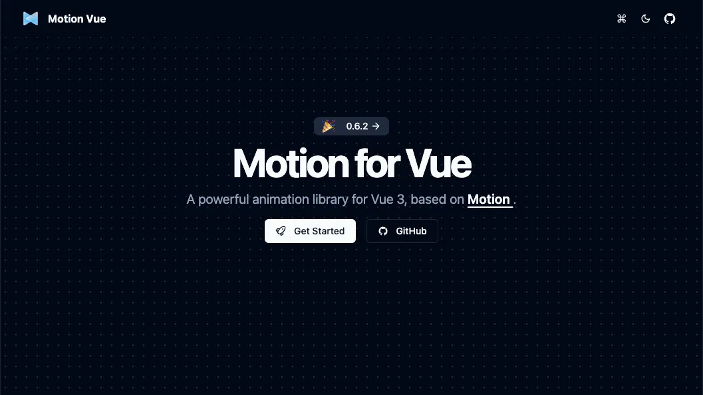
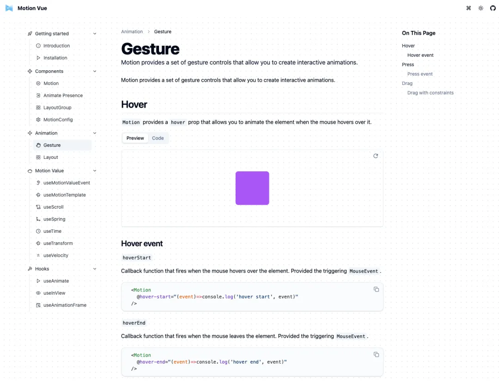
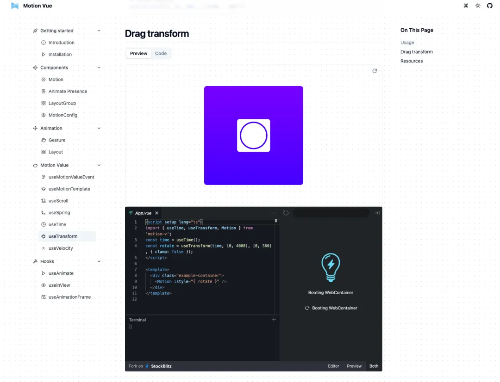
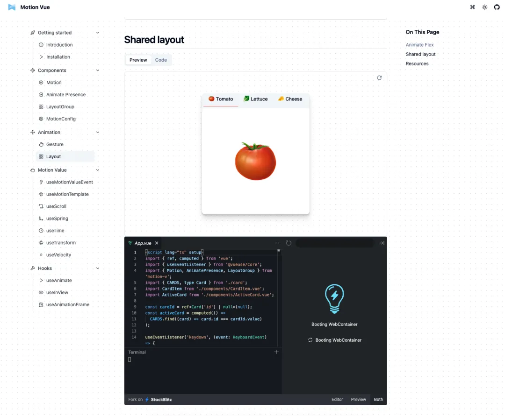

在 Vue 生态系统中，动画库的选择一直是一个热门话题。今天，我们要介绍的是一个由尤雨溪力荐的动画库——Motion Vue。
这个库不仅功能强大，而且使用起来非常直观和便捷，是 Vue 3 开发者的一个绝佳选择。
什么是 Motion Vue？
Motion Vue 是一个专门为 Vue 3 设计的动画库，它基于 Motion 构建。
Motion Vue 的目标是让动画变得简单易用，同时提供强大的功能来满足各种复杂的动画需求。
如果你熟悉 Framer Motion，你会对 Motion Vue 有一种似曾相识的感觉，因为它的设计灵感正是来源于 Framer Motion。
功能特点
声明式动画 API
Motion Vue 提供了一个声明式的动画 API，这使得动画的控制变得非常直观。
开发者可以通过简单的属性绑定来定义动画的行为，无需编写复杂的代码。
例如，你可以通过 :animate 属性来控制元素的位置、透明度等属性。
手势驱动动画
交互式体验是现代 web 应用的重要组成部分。Motion Vue 支持手势驱动的动画，这意味着你可以通过用户的触摸、鼠标移动等手势来触发动画。
这为创建动态和响应式的用户界面提供了强大的支持。
动态动画值
动态动画值是 Motion Vue 的另一个亮点。你可以定义动画值，并在运行时动态地改变它们。
这使得动画可以更加灵活地响应用户的行为和应用的状态变化。
布局动画和过渡
布局变化是 web 应用中常见的场景，Motion Vue 提供了平滑的布局动画和过渡效果。
当元素的尺寸、位置或顺序发生变化时，Motion Vue 能够自动计算并应用平滑的动画，使用户界面的变化更加自然。
快速开始
安装 Motion Vue 非常简单。你可以通过 npm 或 yarn 将它添加到你的项目中：
npm install motion-v
# yarn add motion-v
基本用法也非常直观。以下是一个简单的示例，展示了如何使用 Motion Vue 创建一个简单的动画：
<script setup>
import { Motion } from "motion-v";
</script>
<template>
<Motion :animate="{ x: 100 }" />
</template>
在这个示例中，组件的 :animate 属性被设置为 { x: 100 }，这意味着该元素将在 x 轴方向上移动 100 个单位。
Motion Vue 是一个功能强大且易于使用的 Vue 3 动画库。它不仅提供了丰富的动画功能，还通过声明式 API 和动态值等特性，让动画的控制变得非常直观。
无论你是初学者还是经验丰富的开发者，Motion Vue 都是一个值得尝试的选择。如果你对动画效果有较高的要求，Motion Vue 绝对能够满足你的需求。
官方文档：https://motion.unovue.com/
Github 地址：https://github.com/unovue/motion-vue